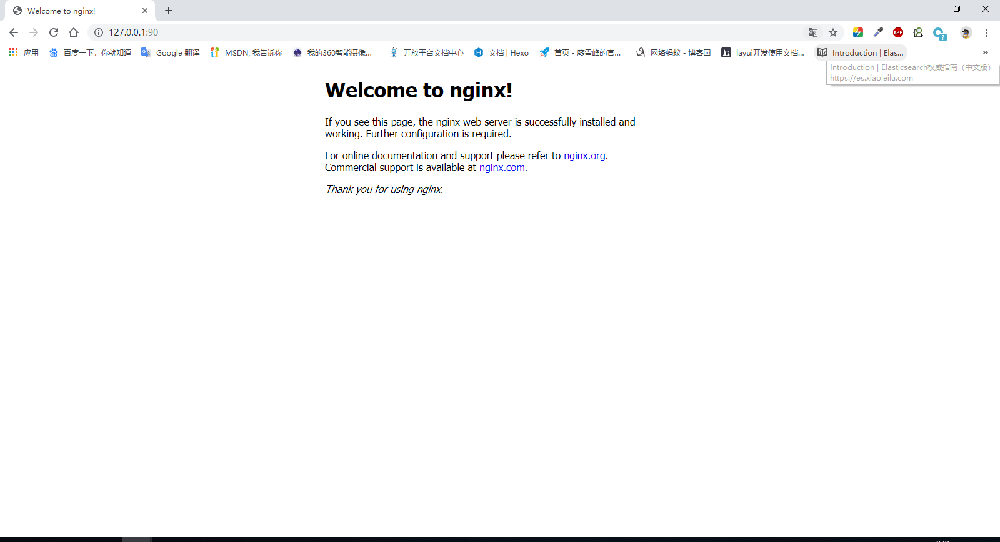
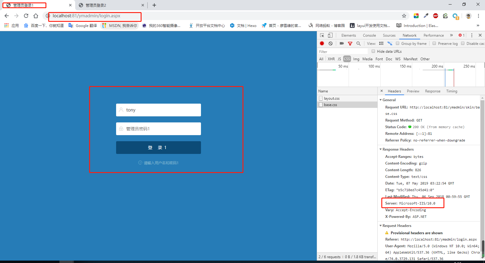
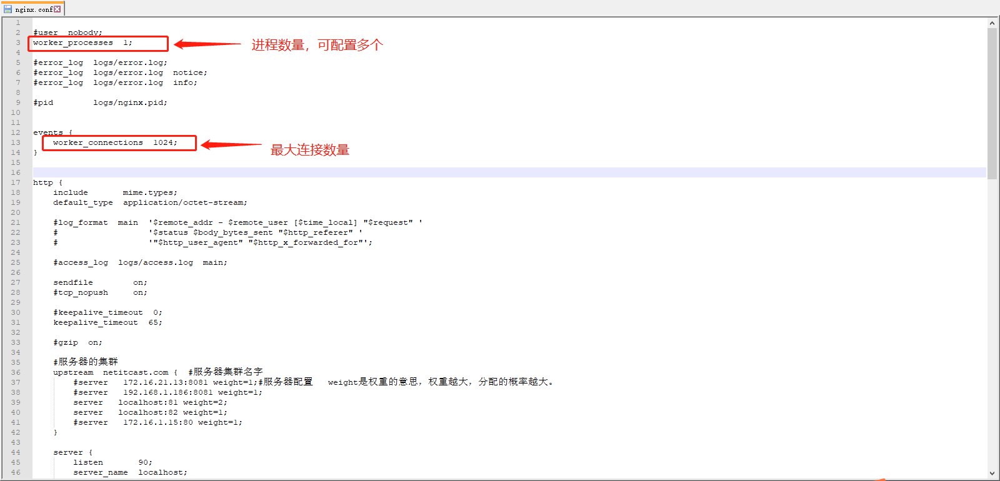
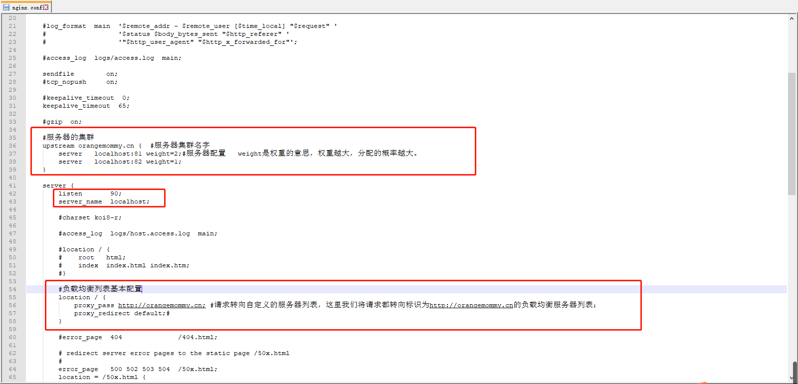
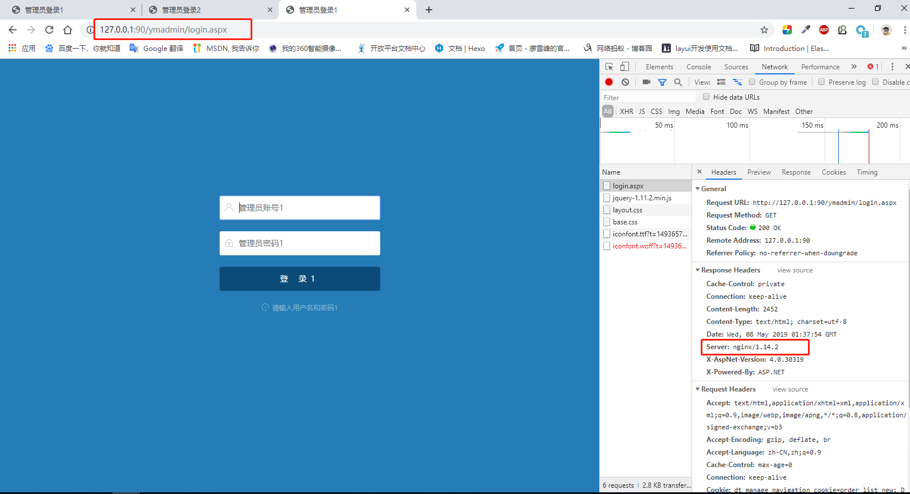

今天在看单位的一个网站项目时，发现用了阿里的Tengine做了反向代理，实现了页面访问的负载均衡效果。突来灵感，就像自己也做一个简单的负载均衡，分享一下。
但我用的是Nginx，关于Nginx的流行程度，好用程度，等等我也不多说了，因为我也说不完，也说不清，还不如大家自己去查，就着重了解一下，什么是反向代理，什么是负载均衡，关于Nginx的详细介绍，以及一些关于文件同步，静态资源缓存这些问题就可以了，这里我就不多说了。
我这篇就本着简单易用的原则，跟大家分享一下怎么在Windows平台，实际演示一下用Nginx来做.net网站的负载均衡。
负载均衡真正实现分流效果的话，我们肯定是至少需要两台服务器，或者是三台，Nginx单独应该在一台服务器，那么我在这演示的话，肯定没那么多资源了，所以我就用我当前电脑，通过分配不同的端口号来模拟一下。
首先保证电脑上安装有Nginx服务，具体的安装过程我就不多说了，很简单

然后，我们要准备好我们做负载均衡的站点，大家手里肯定都有网站或webapi的项目都可以用，或者你直接在虚拟目录里做个txt或者随便写个网页都行，只要是能正常发布访问的站点就行，我这里就用我之前做过的一个网站后台做演示，先看一下我的站点。
然后看站点打开后的效果

这里我把同一个项目，分别发布到iis的81和82端口，网站元素用1,2做了区分标识，而且大家现在也能看到现在这两台服务器从客户端浏览器返回的服务器信息都是iis，在这之前所有的工作，大家都是很清楚地，接下来，我们开始配置我们的Nginx，首先大家进入Nginx安装目录下，打开conf文件夹下的nginx.conf文件进行编辑，nginx的配置文件内容还是非常简洁的，比我们熟知的Apache的配置文件内容少很多，这应该也是nginx顶替Apache成为最受欢迎的web服务器的原因之一吧。
好，我们打开配置文件，我们需要注意的首先是监听端口，nginx默认监听的时80端口，而我本地的80端口已被使用，所以我改成了90。
我简单介绍几点吧，


配置完成后，保存并重启nginx服务器，然后我们在浏览器打开，再次从nginx端口去访问我们部署的网站，看到的效果就成了这样

我们看到返回的服务器信息，全部变成了nginx，也就是说，如果我把1,2的标识去掉，对用户来说，这种变化是无感的，但访问效率确实成倍增加的，nginx会根据我们在配置文件里分配的权重，帮我们决定去打开那个端口下的站点，实际就对应着哪台服务器，权重越大，实际指向那台服务器的可能性就越大，如此，我们便实现了对iis站点的简单的分布式部署和负载均衡。
本着简洁的原则，我这篇就介绍道这里，没错，再往深我也介绍不了多少了，哈哈，回到我文章开头提醒大家注意的几个问题，想深入了解的同学，就去多了解一下了，当然了，大神请自觉飘过。。。